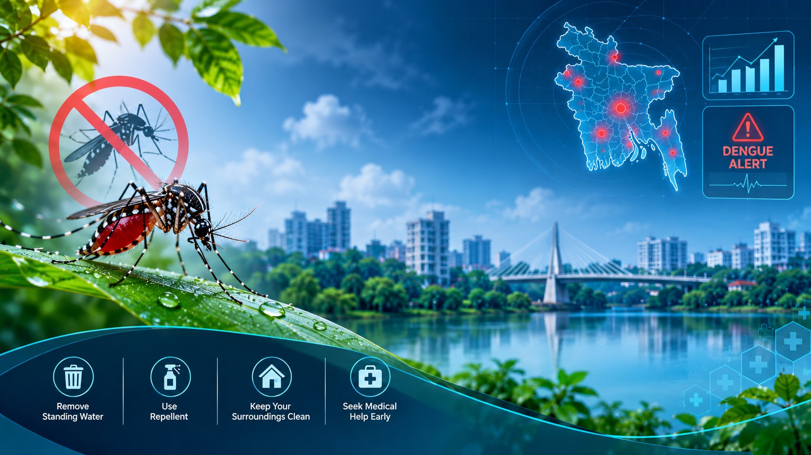

Why Aedes Eggs Survive Dry Spells: Understanding Desiccation Resistance
Unlike many mosquito species, Aedes aegypti eggs can remain viable on dry container walls for months. Scrubbing buckets and flowerpot saucers—not just emptying them—is essential to break the cycle.